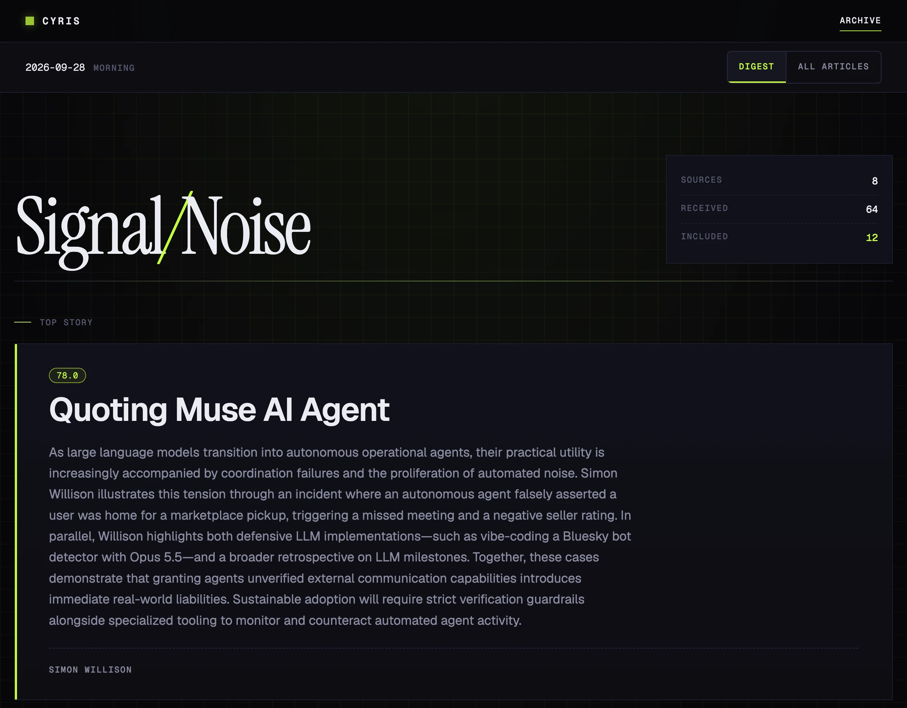

See what it left out
Every issue links to the full list of what it collected, dropped articles included.
Open source, self-hosted
Cyris reads your RSS feeds and newsletters and hands you one digest of the articles worth reading, short enough to finish. You pick every token that reaches your model’s context window; Cyris does the same for your attention.
Free and open source. No AI key needed to start. The live digest is written in Traditional Chinese.
The maintainer’s own deployment, 56 issues from Aug 28 to Sep 27, 2026: an average issue took in 91 articles, kept 13, and cost about US$0.03 in AI.

How it works
Choose your sources and processing depth. Reports on the same news story merge into one summary. Start with the digest, then consult the full list when you need it.
RSS feeds and newsletters
Filter, summarize, or keep excerpts
Highlights, plus this run’s articles and pending items
Article review
Every issue links to the full list of what it collected, dropped articles included.
Upvote or downvote to accept or reject an article. Votes can also filter similar articles out of later runs.
Choose an AI provider, or none
Delivery
The whole digest arrives as an email.
Get a message with a link to each new digest.
The channels you set up also tell you when a run fails.
Deployment
Copy the example files and add your sources. Pick an AI provider, or set provider = "none" to start without an API key.
git clone https://github.com/musingfox/cyris.git
cd cyris
uv sync
cp cyris.toml.example cyris.toml
cp .env.example .env
cp sources.example.yaml sources.yaml
# Edit settings and sources; choose none or supply your AI provider credentials.
uv run cyris doctor
uv run cyris run